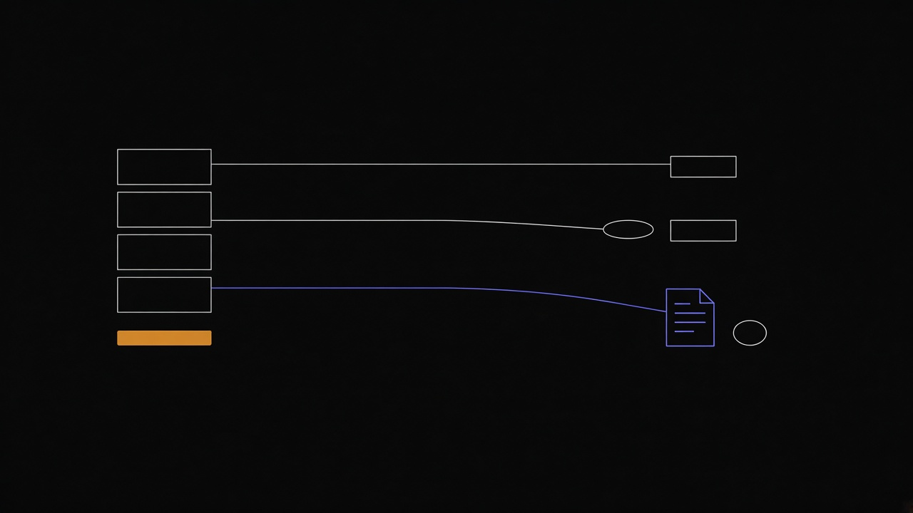

A question we get is whether kcore is the only tool that turns a VMware estate into Terraform. It is not. Plenty of products move VMware virtual machines, and some of them write Terraform. Almost none of them write Terraform for a hypervisor that is not VMware.
The names get mixed together because each one is called a migration tool. They do three different jobs.

Stay on VMware, and describe it in Terraform
The official vSphere provider
manages virtual machines, networks, and datastores that remain on vSphere.
You can import a VM you already know by inventory path, and
terraform plan -generate-config-out will sketch HCL from that import.
The guest does not leave VMware. The provider still does not list a whole estate for you.
Operators enumerate with govc or PowerCLI, then write the import blocks.
Terraformer is the tool people
mean when they say “turn live infrastructure into Terraform.” It never really supported vSphere,
and Google archived the repository on 16 March 2026. Articles that show a
terraformer import vsphere command are describing a command that is not in the tool.
Leave VMware, without writing Terraform
This is the crowded category, and it is the one that actually copies disks.
- Forklift, Red Hat’s Migration Toolkit for Virtualization, moves guests to KubeVirt. It uses virt-v2v, and it can warm-migrate with changed-block tracking.
- Harvester’s importer does the same job toward a Harvester cluster, as Kubernetes resources.
- V2P inventories vCenter, scores compatibility, and writes a Proxmox shell runbook. The output is a script, not Terraform.
- Azure Migrate, AWS Application Migration Service, Google Migration Center, and Nutanix Move move the disks onto those platforms.
Several of those destinations can later be represented in Terraform. The migrator itself lands the VM as a disk, a YAML object, or a cloud instance.
Leave VMware, and emit Terraform for the destination
This is the thin slice. A few small generators aim at Azure. There is no maintained product that inventories vCenter and emits Terraform for another on-prem hypervisor. That is the gap kcore-migrate is written for.
It reads a vCenter, or a Proxmox cluster, and writes guests.tf for the
kcore Terraform provider, plus a gaps.md for anything the provider cannot
express yet. convert then calls virt-v2v or qemu-img on a disk you have
already exported. It does not pull disk bytes out of vCenter. Forklift does that pull.
kcore-migrate does not.
The practical order is the same one the diagram shows. Inventory the estate. Read the gaps. Convert an exported disk to qcow2 or raw. Apply the Terraform. A whole-estate cutover is still a project. The commands are in the import guide.